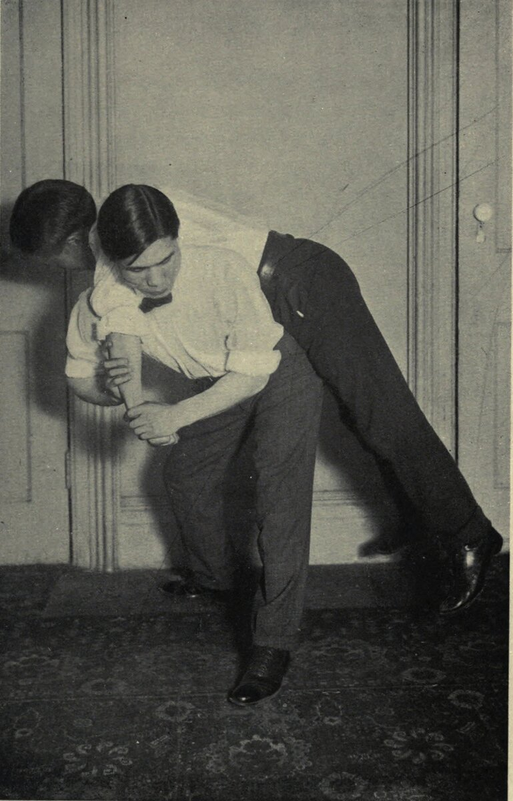
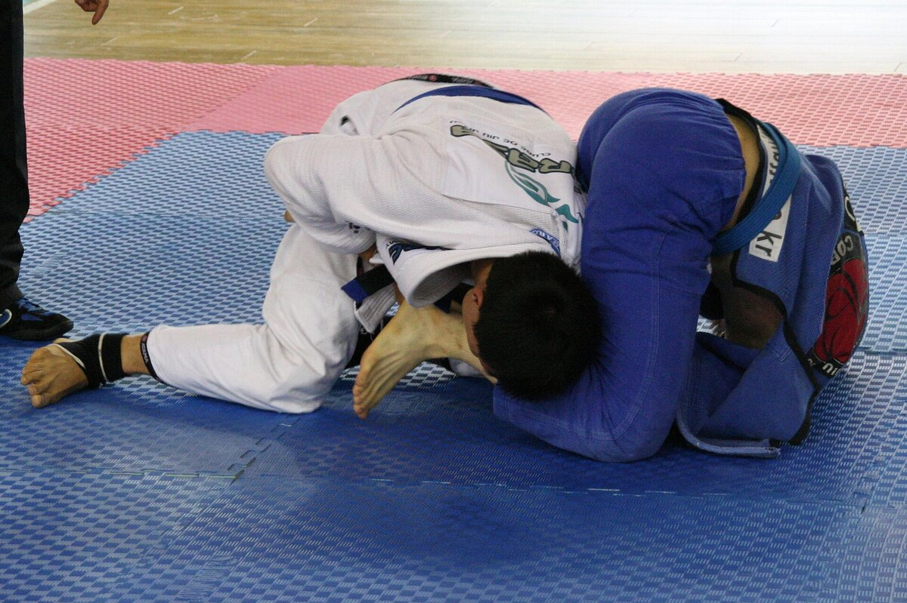

B2 · Work & Career
Two Kinds of Problem
A story about coding and jiu-jitsu, and the phrasal verbs that carry a career decision.
Play the audio and follow along, then read it again on your own. Tap or hover over a highlighted word to see what it means.
James had been drawn to two things for as long as he could remember: computers and jiu-jitsu. He took after his father in that, which he found slightly annoying and mostly reassuring. His father was a software engineer during the day and a jiu-jitsu black belt in the evenings, and he moved between the two without appearing to notice the distance. James wanted to live up to that.
Through his teenage years he spent most of his free hours coding, and kept running into the kind of problem that makes people give up. He did not give up. He had a knack for taking a complicated algorithm apart, seeing which piece was actually wrong, and putting it back together — which, he came to realize, is close to what happens on a mat. You do not overpower a good opponent. You find the one point where their position depends on something they cannot hold.

The work paid off. He graduated, and a well-regarded firm offered him a job. It was a good offer, and he found he could not quite bring himself to take it, because accepting meant putting jiu-jitsu aside for years. After thinking it over longer than his family thought reasonable, he asked the firm to hold the offer open, and set out to win the regional championship.
It was harder than he expected. Training was relentless, and results came slowly enough to be discouraging. He applied the same stubbornness he had used on difficult code: work out what is actually failing, fix that, test it again. Between sessions he picked up freelance contracts to cover his rent, because chasing one ambition is not a reason to let the other fall apart.


About a year in, he ran into an old university friend who had moved into technical recruiting. They caught up over coffee, and she mentioned a role at a company he had been quietly watching for years — one that would suit him better than the offer he had postponed. He applied, and more importantly, he now had someone inside who could speak for him.
Holding the two together was difficult, and for several months he was doing neither as well as he wanted. But he kept at it. He won the regional championship that spring, and took the job that summer after an interview in which he was asked to debug something unfamiliar in front of two strangers — a situation he found considerably less stressful than a competitive match.
He had lived up to his father's example, which was what he thought he wanted. What he had not expected was how much of the second discipline turned out to be useful in the first: the patience, the willingness to lose repeatedly while learning something, and the habit of looking for the one weak point instead of pushing harder against the strong ones.
Key Vocabulary
- to take after someone to resemble an older relative in character or ability
- to live up to to meet a standard that someone else has set
- to run into to meet something or someone unexpectedly
- to give up to stop trying
- to have a knack for to have a natural skill at something
- to take apart to separate something into its pieces in order to understand it
- actually in fact, really — careful: not 'at the moment'
- to realize to become aware of something — careful: not to carry something out
- to pay off to produce a good result after a long effort
- to put aside to postpone something in order to deal with something else
- to think over to consider something carefully before deciding
- to set out to begin a task with a clear goal in mind
- relentless continuing without any let-up
- to pick up to acquire work casually or as it becomes available
- to fall apart to break down or stop functioning
- to catch up to exchange news with someone you have not seen for a while
- to postpone to move something to a later time
- to keep at it to continue with something difficult
- to debug to find and remove the errors in a program
- a stranger a person you do not know — careful: not a person from another country
- to push to press or move something forward — careful: it means the opposite of pulling
Two Kinds of Problem — B2 · Work & Career · Renan the Teacher, English Language Academy · https://renangrossi.github.io/englishclasses/reading/b2/it-and-jiu-jitsu.html
Interactive Exercises
Practice
Complete each exercise, then click Submit to see your score and an explanation for every answer.
Speaking & Writing
Discussion
There are no right answers here — use these to practice speaking, or write a short answer to each.
- James postponed a job rather than refusing it. When is delaying a decision the right move, and when is it just avoiding one?
- He says patience and a tolerance for losing carried over from sport into his work. What has one part of your life taught you that you use in another?
- Was asking a firm to hold an offer open a reasonable request, or too much to ask?
- “You find the one point where their position depends on something they cannot hold.” Describe a problem you solved that way rather than by working harder.
- Write about 150 words about a time you pursued two things at once. What did it cost, and was it worth it?